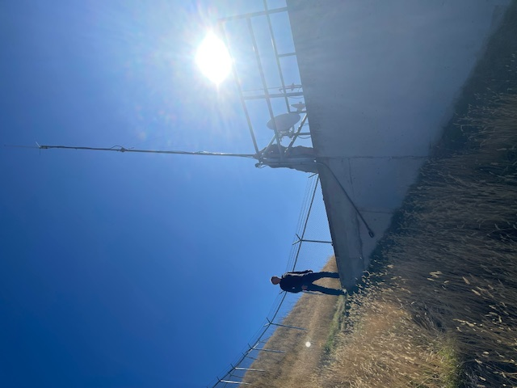

Fusion Repeater VE7FUS Antenna Replacement
Back to StoriesStory 804
Mon, 2024-10-14 15:46 — VA7AV

On Thursday, October 10th, Dave VE7LTW, Ralph VA7VZA and Brock VA7AV visited the VE7FUS site on Coach Hill and replaced the existing dual band base antenna with a new one of similar design.
The existing antenna had been found to have been damage, with the fiberglass vertical section split and the internal RF element falling out.
The repeater had been blowing fuses, suggesting that something was wrong, and hopefully the problem was limited to the antenna.
The mast was dropped, the antennas swapped and the mast returned to vertical.
The repeater checked OK at that point and is back in operation.